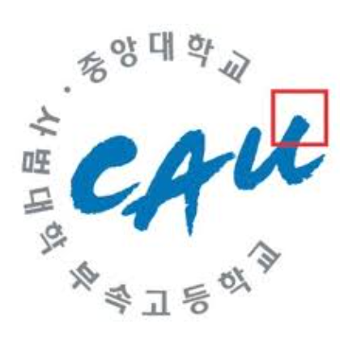
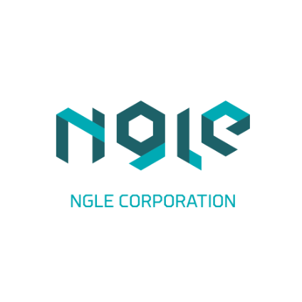

Introduce myself
I believe in the code that moves the world in a slightly better direction.
When I create websites, I design spaces for people to stay; when I make programs, I find ways to make daily life flow more efficiently.
When developing games, I draw worlds where immersion and emotion coexist; when doing QA, I protect those worlds so that they are perfectly complete.
Development, to me, is not just technology but designing human experience. What matters more than flashy features is the natural feeling users have.
So I always focus on “invisible perfection.” I think carefully about how smoothly a single line of code reaches the user and how a single button fits into their rhythm.
Whenever I create websites, programs, or games, I start by asking “why.”
Why is this feature needed? Why is it implemented this way?
I care more about how, why, and with what it was made than the final result.
Web, program, game, and QA — all are different fields, but the question I always ask myself as a developer remains the same.
"How can people use it more comfortably, more easily, and more enjoyably?"
That question is why I keep developing, and finding the answer and connecting it to the world is how I love what I do.
Available Languages / Tools
- SQL
- HTML
- CSS
- Java
- JavaScript
- Python
- C
- C++
- C#
- Microsoft Office (Excel / Word / PowerPoint / Access)
- Unity
- Visual Studio / Visual Studio Code
- Slack / Discord
- Notion / Google Docs / Google Sheets
- pip / PyCharm
- Git / GitHub
- Jira / Confluence
- Android Studio
- Eclipse
- Node.js / Express
- PowerDirector / Capcut
- Google Cloud
- Chrome Extension Dev Environment (Manifest v3)
- AI Image Tools
- Multi-language Toggle
Program / Game
Time Minder
When I work and take a break on a computer instead of a mobile phone, I often can't hear the alarm on my phone due to the sound of the computer. This is why I developed this program.
It is a program in which when you specify a time on your computer, the sound source of the mp3 file is output at a specified time.
It appears at the top of other programs, so there is no way you can never hear the alarm.
Read more (Download PPTX)Smart Weather Guide
Smart Weather Guide was developed for couples and families who are currently living in different cities than themselves.
Running the program will reveal their current location, date, time, weather, and air quality status, plus additional hours in the major cities that you specify at the bottom.
Just by running the program, you can get a lot of information and check the time in other cities where couples and their families live.
Read more (Download PPTX)The mini-games collection
The mini-games collection is a collection of four mini-games produced by itself using unity and grouped them into one project.
When you play this game, you can select one of the four games and play a variety of games as there is also a button to return to the main screen at any time.
Each game has its own characteristics, characters, and homemade BGM, which can give users a lot of experience and enjoyment.
Read more (Download PPTX)One-man Work
Chime
This program was developed for those who cannot hear the alarm on their mobile phone due to sound when they are working or playing games on their computer.
If you specify HH:MM after running this program, an alarm for the specified time is added to the alarm list,
and even if you close the program and are doing something else, the alarm will automatically run at that time along with the music of the MP3 file.
If you want to end the alarm, you can click the alarm end button on the pop-up window of the alarm end message.
The icon of this program means that my birthday is 0212😂
Read more (Download PPTX)A Belgium Translator
The program allows users to select a total of five languages, including English, French, Dutch, German and Korean,
and automatically translates the text into the language of their choice when they input text from all over the world.
The program will also be registered in a Chrome extension program.
And i can change the main screen language
Read more (Download PPTX)Color My Site
The Color My Site program is a program that changes the color of the website to the color that users want.
users want. Change the color of the website to your favorite color to relax your mind.
Please remember these two things
1. Turn off the dark mode
2. High-security websites do not change color.
Read more (Download PPTX)D-Day Calculator
D-Day Calculator is a program developed to keep someone's anniversary and precious time safe.
It can be used by anyone around the world, and it is a program that
everyone will be satisfied with its easy UI and excellent features.
Read more (Download PPTX)Link Saver
Link Saver is a program that makes links more convenient and easy to see.
You can get the address and name of all the tabs that are currently open,
and you can insert the URL directly to name and save them.
Once you enter the menu, you can create, modify, and delete folders,
and you can put links in folders to manage them through the move button.
Read more (Download PPTX)Offline Web Capture
Offline Web Capture can be captured on the current monitor screen and stored locally anytime,
anywhere to check the captured screen offline. It is useful for saving newspapers, photos, etc. on the screen.
You can check the title of the site in the list and add or delete it to the list at any time.
Read more (Download PPTX)Audio Max
With Audio Max, you can freely boost volume up to 800%.
Adjust bass boost and the equalizer.
Save presets to enjoy your music exactly the way you like.
Let's emoji
Copy multiple emojis with a single click!
We've packed the most popular emojis—no need to visit a website;
just click inside this extension to copy.
Want to know the creator? After launching, press the GW button!
Lumina
Lumina is a personal color analysis tool that helps you discover
the color palette that best matches your natural features.
Upload a photo to analyze your skin, hair, and overall tone,
and determine your personal color season within the 12-tone system.
QR Code Converter
QR Code Converter automatically recognizes the current page URL
and lets you create and store its QR code with a single click.
You can also enter any other URL,
and scan QR codes to extract the URL and open the link.
MBTI Studio — 성향 검사
This program presents 40 questions at a time,
where you answer on a 1–7 scale to measure MBTI in depth.
From a pool of 100 items, 40 are randomly selected each retest.
After answering all 40, you can view results,
copy them as text, or save as an image.
Even if the program closes mid-test, you can resume from
the main screen’s “Continue” button.
Use “Reset All” to clear all MBTI history,
and “Recent Result” to jump back to the most recently completed MBTI result (if not reset).
YouTube Ad Skipper (Toggle)
This Chrome extension automatically skips YouTube ads.
You can toggle it ON/OFF anytime;
when ON, it will process YouTube advertisements automatically
as much as possible.
YouTube Quick Controller
Control an active YouTube video from other tabs:
seek time, jump to the next video, or reset to 00:00.
Handy for music listening and lectures.
CozyView – Eye Protector
CozyView reduces eye strain by adding a gentle sepia tone
and a blue-light filter to any website.
Toggle modes, tune strengths, exclude specific sites,
see mode status in the toolbar badge,
enjoy multilingual UI (EN/KR/JA/ZH/FR),
and switch modes quickly with Alt+Shift+D.
Live-fx-Converter
It is a program that allows you to find out the amount of money you exchange in the world's currencies. It allows you to select currencies and fees from all over the world and renews the value of your currencies in real time every 10 minutes, starting at 9 a.m. It supports five languages: Korean, English, Japanese, Chinese, and French.
Mosaic Painter
Mosaic Painter program allows you to select an image and add a mosaic effect to the selected image. There are four types of mosaics: pixel, blur, dot, and triangle, and you can select one of five languages: Korean, English, Japanese, Chinese, and French.
Realtime Weather
This program measures real-time weather, temperature, wind speed, humidity, and precipitation probabilities by recognizing the user's location and checks the time. It supports five languages: Korean, English, Japanese, Chinese, and French.
RegionShot - 단축키 캡쳐
단축키를 지정하고 단축키 또는 영역 캡쳐 버튼을 클릭하여 화면을 멈추고 원하는 영역을 캡쳐하세요. 캡쳐 후 버튼 혹은 우클릭을 통해 캡쳐한 영역의 이미지를 복사 혹은 저장도 가능합니다.
Random Cipher Memo
이 프로그램은 사용자마다 고유하게 생성되는 랜덤 시드(암호 알파벳)를 이용해 텍스트를 안전하게 암호화하고 해독할 수 있는 메모 도구입니다. 일반 텍스트를 즉시 암호문으로 바꾸거나, 반대로 암호문을 해독해 원본 텍스트를 확인할 수 있습니다. 저장 기능을 통해 암호화된 메모를 관리할 수 있으며, 시드 공유·불러오기 기능으로 여러 브라우저에서도 동일한 암호 체계를 사용할 수 있습니다.
Neo YouTube Speed Tuner
이 확장 프로그램은 유튜브 동영상의 재생 속도를 0.1배속부터 3배속까지, 0.1 단위로 정밀하게 조절할 수 있도록 도와주는 도구입니다. 어떤 탭에서 속도를 변경하든 모든 유튜브 탭에 동일하게 적용되며, 새로 여는 탭에서도 설정된 속도가 자동으로 유지됩니다. 깔끔하고 직관적인 UI를 통해 슬라이더로 손쉽게 속도를 조절할 수 있고, 필요할 때는 한 번의 클릭으로 속도를 1.00x로 초기화할 수 있습니다. 편리한 속도 제어 기능으로 학습, 감상, 몰아보기 등 다양한 시청 환경에 최적화를 제공합니다.
URL & Keyword Blocker
이 확장 프로그램은 사용자가 입력한 URL이나 키워드를 기준으로 원치 않는 웹사이트를 자동으로 차단해주는 개인 맞춤형 필터링 도구입니다. 네트워크 차단 방식이 아닌 화면 덮기 방식이라 크롬 환경에서 안정적으로 동작하며, 차단 목록과 언어 설정은 모두 로컬에 저장돼 개인정보는 외부로 전송되지 않습니다. 한국어·영어·일본어·중국어(간체/번체)까지 지원해 다양한 환경에서 편리하게 사용할 수 있으며, 인터넷 사용 중 집중을 방해하는 사이트를 효과적으로 차단하는 데 최적화되어 있습니다.
Cute Border Worm
크롬 화면의 네 모서리를 따라 귀여운 지렁이가 계속해서 움직이는 애니메이션을 제공합니다. 사용자는 지렁이의 표시 여부를 설정할 수 있고, 속도(0.1~2.0배)와 색상을 자유롭게 조절할 수 있습니다. 또한 속도·색상 초기화 기능도 지원하여 언제든 기본 상태로 되돌릴 수 있습니다. 작고 귀여운 요소를 추가해, 브라우저 사용 경험을 한층 더 재미있고 생동감 있게 만들어주는 도구입니다.
Auto Start Tabs
컴퓨터를 재시작 후 크롬을 처음 켤 때 내가 지정한 사이트들을 자동으로 열어주는 실용적인 확장 프로그램입니다. 필요한 사이트만 깔끔하게 정리해두면 매번 손으로 열 필요가 없어 훨씬 편합니다. 초기 실행 때만 동작하도록 되어 있어 새 창을 열거나 새 탭을 열 때 중복으로 열리지 않습니다.
탭 볼륨 컨트롤러 (10% ~ 300%)
이 확장 프로그램은 브라우저의 각 탭마다 볼륨을 10%부터 300%까지 개별적으로 조절할 수 있도록 도와주는 도구입니다. 실시간으로 볼륨이 조절되며, 설정한 값은 프로그램을 닫았다가 다시 열어도 그대로 유지됩니다. 또한 선택된 탭의 음소거·해제, 100% 초기화 기능도 제공하여 사용자가 원하는 청취 환경을 편리하게 구성할 수 있습니다. 여러 탭을 동시에 사용할 때 각 탭의 오디오를 깔끔하고 정확하게 관리할 수 있는 실용적인 확장 프로그램입니다.
Movies, Dramas & Anime Rating Website
I enjoy watching various movies, dramas, and anime in my personal time. I built this website to log my ratings for what I’ve watched, recommend great titles to others, and easily revisit masterpieces later. Passwords are stored as hashes in Firestore. Visitors without the password can only browse in read-only mode; those who know the password can add, edit, and delete items.
Fortune & Tarot
This website lets you check Today’s Fortune, Comprehensive Fortune, and Tarot readings. Based on your name, date of birth, birth time, gender, interests, focus areas, this year's goals/situation, and your question, it supports 600 cases for Today’s Fortune, 17,280 cases for Comprehensive Fortune, and 468 cases for Tarot Reading. Results and detailed explanations vary depending on what you enter. Fortune and tarot are just for fun—please don’t take them too seriously :)
Dream Log & Interpretation
This website lets you record the dreams you had and shows an interpretation for each record. Enter a title, choose tags, and write the content to save and view the interpretation. The result page provides a summary, what to be careful about today, positives, and negatives with detailed explanations. You can copy the interpretation as text via the copy button. Saved dream entries and their interpretations can be reviewed and deleted in My Archive. Interpretations are for reference only—please prioritize real-world context for important decisions.
The Answer of My Life
When you have a question you can’t ask others, when you want to hear an answer from someone, or when you want to find “the answer of my life,” ask your question on this site and it will give you a random answer from 122 possibilities. Try it alone, with family, or with friends—just for fun! :)
Mood Juice Extractor
Choose today’s feelings and turn them into a juice. You can download the created juice as a PNG image, and record how your day felt by visualizing emotion ratios as a glass of juice.
Did you know?
We share surprising facts people often don’t know. There are 100 total facts. Press Space or click the “Amazing Fact” button to get a new one. Dark/Light theme is available, and more facts will be added over time. Enjoy!
Canvas Studio
Use various tools and shapes—pencil, airbrush, calligraphy, stippling, splatter—to freely paint on the canvas and save as PNG. You can set color, opacity, and thickness, and reset to a blank canvas anytime with the Reset button.
AI 이미지 판별기
이 웹사이트는 브라우저에서 동작하는 프론트엔드 기반 AI 이미지 판별 도구입니다. 이미지를 업로드하면 밝기·색감·엣지·패턴 등의 시각적 통계 정보를 분석해 AI 생성 가능성을 퍼센트로 추정해 줍니다. 모든 처리는 사용자 PC 내에서 이루어지며 서버 전송이 없어 개인정보 안전성이 높습니다. 가벼운 구조지만 시각화·UI 완성도가 높아 실제 판별 도구처럼 즉시 사용 가능한 형태로 제작되어 있습니다.
world_map_pins
이 웹사이트는 전세계 위성 지도를 기반으로 특정 위치에 핀을 저장하고 관리할 수 있는 개인용 위치 기록 도구입니다. 핀을 더블클릭하면 이름을 수정할 수 있는 창이 열리고, 좌측 목록에서 핀의 이름·카테고리·메모를 편집하거나 카테고리별로 정리해 접고 펼칠 수 있습니다. 검색 기능을 통해 이름, 메모, #태그로 빠르게 원하는 핀을 찾을 수 있으며, 지도 위 핀을 클릭하면 해당 위치로 즉시 이동하도록 되어 있습니다. 모든 데이터는 브라우저 로컬에 저장되어 사용자가 사용하는 기기에서만 보관되는 안전한 개인용 지도입니다.
Math Flight (PC)
사칙연산 (+, - , x , %)을 사용하여 비행기를 업그레이드 시켜
다가오는 몬스터들을 처치하고 오래 살아남는 게임입니다.
키보드 방향키 혹은 마우스로 비행기 이동이 가능하며
사칙연산 박스, 몬스터는 랜덤된 위치에서 랜덤한 종류로 생성됩니다.
로컬 단위로 최고 기록이 저장되어 자신의 한계를 도전할 수 있는 게임입니다.
Mini Runner
점프와 엎드리기로 장애물을 피하며 달리는 러너형 아케이드 게임입니다.
점수가 높아질수록 속도와 난이도가 점진적으로 상승하고, 코인을 모아 보너스를 얻을 수 있습니다.
모바일 터치와 PC 키보드를 모두 지원하며, 타이밍만 맞추면 누구나 피할 수 있는 밸런스로 설계됐습니다.
1000점마다 폭죽 연출과 마일스톤 보상이 나타나며 최고 점수는 자동 저장됩니다.
Infinite Tower Stack
이 게임은 좌우로 움직이는 블록을 정확한 타이밍에 멈춰 쌓아 올리는 간단하지만 중독성 있는 타워 스택 게임입니다.
겹치지 않는 부분은 잘려나가 블록이 점점 작아지며 난이도가 상승하고, 한층 더 높은 기록을 세우기 위한 집중력과 반사신경이 핵심입니다.
Emoji Wordle
이 게임은 이모지만 보고 어떤 영화·드라마·애니 제목인지 맞히는 추리형 퀴즈 게임입니다.
힌트를 활용해 정답에 가까워질 수 있고, 3회 오답 시 게임 오버, 정답을 맞히면 다음 문제로 넘어가며 연속 정답 기록에 도전할 수 있습니다.
Zombie Typer
Zombie Typer는 다가오는 좀비 머리 위의 단어를 정확히 타이핑해서 처치하는 실시간 타자 디펜스 게임입니다.
시간이 지날수록 좀비 속도와 단어 난이도가 올라가며, 콤보·하이스코어·난이도 선택 등으로 긴장감과 재미를 더했습니다.
PC·모바일 모두 지원하며, 반응 속도와 타자 실력을 동시에 키울 수 있는 게임입니다.
Certificates
Microsoft Office Specialist PowerPoint 2016
Microsoft Office Specialist Word 2016 Expert
Microsoft Office Specialist Excel 2016 Expert
Microsoft Office Specialist Access 2016
Microsoft Office Specialist Master
a first-degree psychological counselor
a second-degree psychological counselor
Education / Military / Career
-
Elementary School: Graduated from Guryong Elementary School
-
Middle School: Graduated from Daechi Middle School
-
High School: Graduated from Chung-Ang University High School (Natural Sciences)

-
University: Graduated from Dongguk University WISE Campus (Computer Engineering)
-
Army: Discharged as Sergeant after full-term service (Artillery)

-
GDR 아카데미 성남위례점 [매니저] (2024.09 ~ 2024.12)

-
nGle [QA/QC] (2025.03 ~ ing)

Job Description (JD)
■ 담당 서비스
GDR 아카데미 성남위례점 매장 운영 총괄
회원 관리, 시스템 운영, 코칭 지원, 매장 환경 관리 등 전반적인 운영 안정성 확보
매장 KPI·고객 만족도·매출·시설 품질 유지 관리
■ 주요 업무 Responsibilities
-
1) 매장 운영 및 관리
매장 운영 스케줄 수립 및 일일 운영 프로세스 관리, 매장 오픈/마감, 장비 점검, 환경 정비 등 기본 운영 루틴 관리, GDR 시스템·스크린 장비 등 핵심 기기의 정상 작동 여부 상시 점검, 운영 중 발생하는 이슈 실시간 파악 및 조치 -
2) 회원 서비스 및 응대(Customer Service)
신규 회원 상담 및 등록, 서비스 안내, 회원 레슨 일정 관리 및 시스템 예약 관리, 불편사항·민원 응대 및 만족도 향상 조치, 개인별 사용 패턴 파악 후 맞춤형 서비스 제공 -
3) 코칭 및 프로그램 지원
코치진 스케줄 관리, 일정 협조, 레슨 환경 지원, 레슨 현황/출결/완료 보고 및 운영 데이터 정리, GDR 분석 시스템 활용한 기본 데이터 제공 및 고객 안내 -
4) 매출 및 KPI 관리
회원권·레슨권 판매 및 프로모션 운영, 매출 현황 관리 및 목표 대비 실적 점검, 재고·물품 관리 및 비용 관리 업무 -
5) 시설·장비 관리
골프 장비·타석·모니터링 시스템 정기 점검, 장비 오류/장애 발생 시 초기 대응 및 본사·업체와 협조해 문제 해결, 매장 위생·환경 상태 상시 관리 및 개선 포인트 발굴
■ 자격 요건 Requirements
- 고객 응대 경험(헬스장·골프 아카데미·스포츠 센터 등)
- 기본적인 PC 활용 능력 / 예약·결제 시스템 운용 능력
- 문제 상황에 대한 즉각 판단력 및 커뮤니케이션 역량
- 팀워크 중심의 매장 운영 경험자 우대
- GDR 시스템 사용 경험자 또는 골프 관련 지식 보유자 우대
■ 강점 및 역할 특성 Strengths & Role Characteristics
- 매장 전체 운영을 안정적으로 통합 관리할 수 있는 실행력 보유
- 회원·코치·본사 등 다양한 이해관계자와 원활하게 소통하며 조율 가능
- 장비·시스템 장애 상황에도 빠르게 대처하는 상황 대응력
- 서비스 품질과 고객 만족도를 동시에 끌어올리는 운영 마인드
- 자율적·독립적으로 매장 운영 루틴을 관리하는 신뢰성 높은 업무 스타일
■ 기대 효과 Expected Impact
- 매장의 운영 효율성 극대화 및 고객 만족도 상승
- 장비 장애·운영 리스크 최소화
- 회원 증가 및 매출 성장에 기여하는 안정적 운영 기반 구축
Service Area
Kakao Games / XL Games title "ArcheAge War" client QA.
Perform functional verification on live service and new builds, verify patch contents, and conduct overall in-game quality checks.
Main Responsibilities
- Write test cases based on patch notes: analyze patch notes and change logs, identify impact scope, and structure scenarios and TCs in Google Sheets.
- Verify existing issues and perform regression tests: reproduce issues registered in JIRA, verify whether they are fixed, and update status and comments in JIRA.
- Perform Build Acceptance Tests (BAT): run immediate BAT on new builds to secure stability around critical functions such as crashes, launch failures, and entry failures.
- Conduct ad-hoc exploratory tests: freely explore the game when patch details are missing or unclear, and create detailed new JIRA tickets for any non-duplicate issues found.
- Write issue reports in JIRA: clearly document repro steps, test environment, expected result, and actual result so dev/design/art/UI can understand at a glance.
- Identify risks and share quality status: proactively detect areas with potential quality drops per patch/build and share them with Kakao Games QA and XL Games development teams.
Deliverables
- Test case sheets (Test Case Sheet, Google Sheets based).
- JIRA-based issue reports.
- BAT checklists and build verification comments.
Collaboration & Communication
- Work with XL Games development / server / UI teams on feature definitions, repro environments, and fix details.
- Coordinate test scope, schedule, and issue review with Kakao Games QA team.
- Main tools: KakaoWork, Slack, JIRA.
Ownership
- Own test scenario and test case authoring.
- Own patch analysis and functional verification.
- Own BAT execution on new builds.
- Own identification and documentation of defects and risks.
- Deliver high-quality testing within QA timelines.
Strengths & Role Characteristics
- Capable of independently handling the end-to-end client QA process for the assigned game (ArcheAge War).
- Strong in test speed, accuracy, TC writing quality, and data organization, enabling consistent, non-variant quality of testing.
- High discovery rate of new, non-duplicate issues through ad-hoc testing, providing significant contribution to the live project.
- Highly trusted by both development and QA teams for build quality assessment and risk identification.
Link
Goal
I aim to grow not just as a developer who writes good code, but as an experience designer who solves everyday problems with technology.
Building on my QA and development experience, I want to create a development culture that identifies user pain points first and improves them with systematic completeness.
My goal is to hide technological complexity from users and implement natural, intuitive technology that anyone can use.
Whether it's the web, programs, games, or AI—if it helps people feel more comfortable and immersed, that is the direction I will pursue.
Game Guide
Mini games
Take a short break with quick mini games :)
Solve as many small addition and subtraction problems as you can in 60 seconds.
Find two matching emoji cards and clear all pairs to test your memory.
See how many times you can click the button in just 10 seconds.
Tap the button whose color name matches the text within 30 seconds as fast as you can.